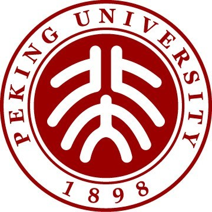
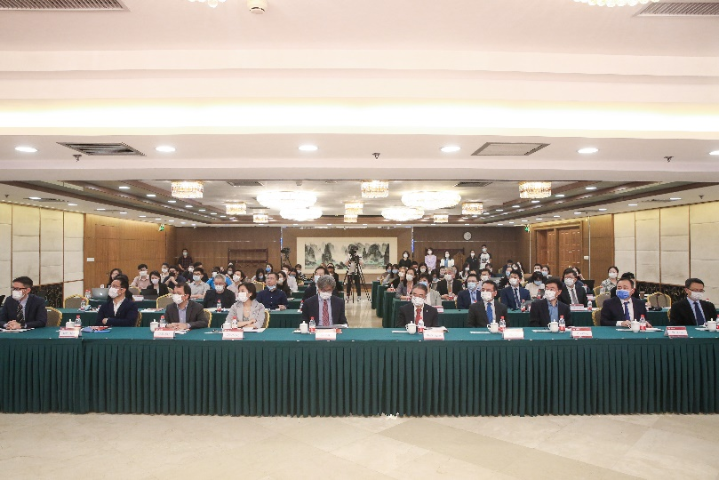
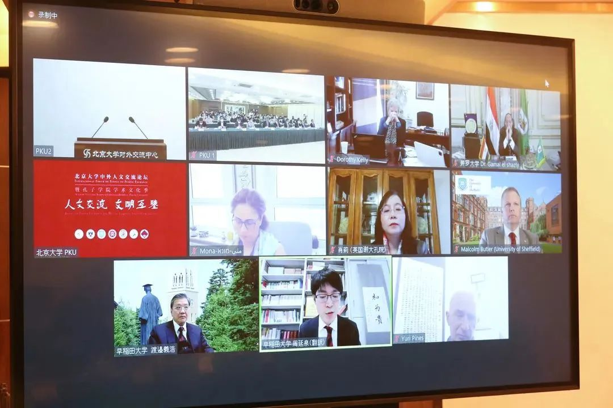
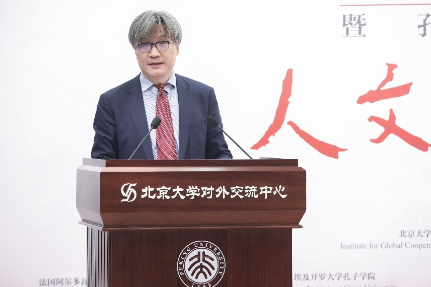
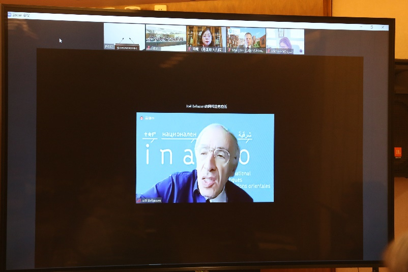
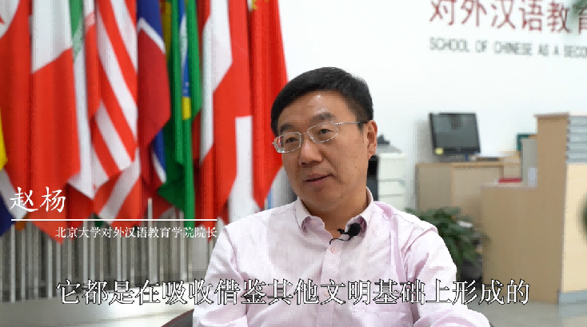
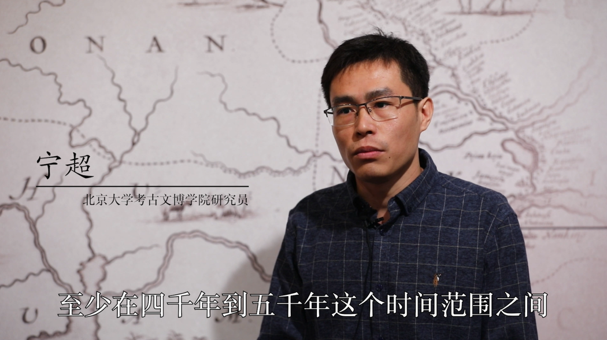
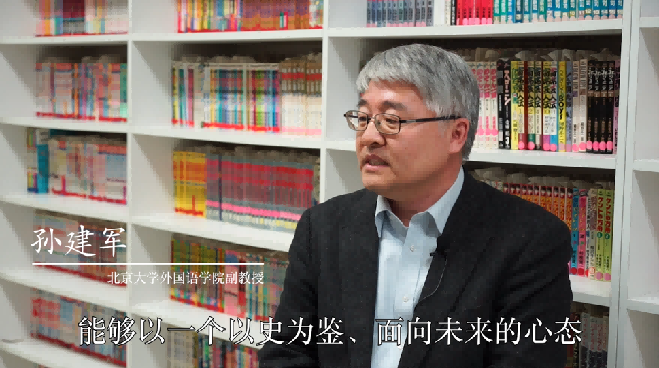
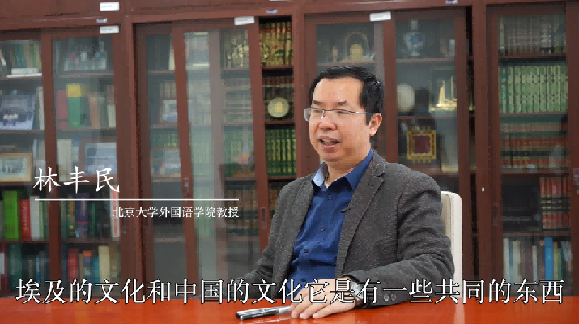

收录于合集
以下文章来源于北京大学 ，作者北京大学
 北京大学 .
北大是常为新的

4月25日， “北京大学中外人文交流论坛暨孔子学院学术文化季” 开幕仪式举行，本届论坛以 “人文交流，文明互鉴” 为主题，来自北京大学、埃及开罗大学、西班牙格拉纳达大学、英国谢菲尔德大学、以色列希伯来大学、日本早稻田大学及法国阿尔多瓦大学等七所高校的40余位专家学者将在为期两个月的系列论坛中共同探索中外人文交流的新形式、新方法。

开幕式现场
↓点击视频，听北大学者讲述中外人文交流互鉴
01
为文明交流互鉴搭建桥梁
北京大学副校长 王博 、埃及开罗大学副校长 贾迈勒 （Gamal Elshazly）、西班牙格拉纳达大学副校长 多萝西·凯利 （Dorothy Kelly）、英国谢菲尔德大学副校长 马尔科姆·巴特勒 （Malcolm Butler）、以色列希伯来大学副校长 蒙娜·库里·卡斯勃利 （Mona Khoury Kassbari）、日本早稻田大学副校长 渡边义浩 、法国阿尔多瓦大学校长 帕斯夸莱·马默 （Pasquale Mammone）以及中国国际中文教育基金会秘书长赵灵山出席会议并致开幕辞。北京大学国际关系学院教授袁明、法国原教育部汉语教学总督学 白乐桑 （Joel Bellassen）发表主旨演讲。

埃及开罗大学、西班牙格拉纳达大学、英国谢菲尔德大学、以色列希伯来大学、日本早稻田大学及法国阿尔多瓦大学等高校校长、学者线上参会
贾庆国
北京大学国际关系学院教授、中外人文交流研究基地主任 贾庆国 主持开幕式。

王博
开幕式上，北京大学副校长 王博 在致辞中指出，北京大学自诞生以来，一直秉持着“开放包容、交流互鉴”的精神，不断开拓创新，致力于广泛而深入的国际交流和文明互鉴。通过举办倡导文明和谐、共同繁荣的系列论坛，积极推动人文社会科学问题的深入研究，构建开放包容的国际学术共同体，为人类和平与发展贡献智慧和力量。
赵灵山
中国国际中文教育基金会秘书长 赵灵山 在致辞中指出，在世界之变、时代之变、历史之变的背景下，中外高等教育机构积极开展学术交流、学者厚积薄发，为人类进步汇集中外智慧，为世界变局提供应变之道是学者的天然使命。
袁明
北京大学国际关系学院教授 袁明 在开幕式上发表主旨演讲。袁明简要回顾了燕京学堂的创立与发展历程，并忆及她在与来自世界各国的青年学者的交流中受到的触动。
不同的文明要在交流中才能凸显其自身的特点，而文明互鉴可以凝结人类的智慧，加快人类文明的进步。了解中国需要了解世界，而中国也需要世界的了解。此次中外人文交流论坛正是让中国了解世界，让世界了解中国的重要渠道，具有十分重要的意义。

白乐桑
法国原教育部汉语教学总督学 白乐桑 （Joel Bellassen）全程使用中文发表主旨演讲，对此次论坛表达了赞许与肯定。他简要回顾了在北大留学的生活，以及回到法国以后从事汉语教育、建立对外汉语教学专业的历程。
在跨文化、跨语言交流中可能会出现误解，应当客观辩证地看待中外文化的异同，从中外文化发展的历史中吸取教训，提高对不同文化的认识。
02
语言，打开另一扇窗
1946年，马坚先生作为中国第一批公派留学生，从埃及留学回国，并在中国高校首创阿拉伯语专业，从此开启了国内阿拉伯语教学的新阶段，散落在民间的中阿文化交流转变为国家推动下的有规划的交流行动。
付志明
北京大学外国语学院副院长 付志明 教授称：
语言是一扇窗户，当我们学习了另一种语言，就为自己打开了另一扇窗户，而人们也可以通过你的语言、你获得的知识，获得不同的文化。
促进文明交流与互鉴，正是北京大学阿拉伯语专业多年来致力于语言教育的动力。

赵杨
语言文化的交流实际是双向的。北京大学对外汉语教育学院院长 赵杨 教授经常对自己的留学生说：
你们学习中文有两个目的，第一是了解中国的语言文化，其次是向14亿中国人讲述你们自己的语言文化，而且是用中国人听得懂的语言，这个效果是不一样的。
在赵杨看来，学习外语能让一个人变得既具有包容心、又具有批判精神，并由此形成一个新的自我。
03
学术，撑起交流之桥
在人文交流与文明互鉴中，学术扮演着怎样的角色？
黎婉欣
北京大学考古文博学院副教授 黎婉欣 指出：
中外人文交流是近十年来考古学界非常重视的一个话题。我们古代的铜料、玉器从哪里来？现代考古已经发现，一些金属类资源或技术，可能就是来自中国以外的地区。
在黎婉欣看来，与国外学界的深度交流，对于考古学、历史学乃至整个古文明的研究，都大有裨益。

宁超
从事古人类DNA研究的北京大学考古文博学院研究员 宁超 一直在进行人群的基因交流与文化传播的相关研究，他介绍道：
目前，整个泛欧亚大陆的文化交流与人群迁徙是国际上最关注的热点之一，古人类DNA研究的成果已经显示，至少在4000年到5000年前，欧洲大陆及东亚的人群就有一定的基因交流了，这也意味着文化互动早已开始。
张剑葳
考古文博学院副院长 张剑葳 从事中国古代建筑的研究及文化遗产保护工作，他提到：
在习近平总书记的倡导下，文化遗产保护受到了高度重视。“推动人类命运共同体”的宏大布局中，文化遗产、自然遗产发挥着重要的作用，中国考古学者参与的亚洲遗产保护行动等具体的国际遗产事务，体现出中国在人文交流与文明互鉴中日益增长的话语权和影响力。
牛大勇
近代是中国由古老文明向现代文明转变、并融入世界文明的阶段，北京大学历史学系教授、日本早稻田大学孔子学院中方院长 牛大勇 认为，在这个过程中，中国与周边邻国的关系非常值得重视和研究。
清末以来，以留学生为中心，纽结了一大批中国的志士仁人、求知于世界的先进分子，他们究竟在那个时期学了些什么、做了些什么，把什么东西带到中国来，又对中国的社会革命有什么推动，这是我们感兴趣的话题。

孙建军
北京大学外国语学院日语系系主任、副教授 孙建军 于2012-2015年担任早稻田大学孔子学院的中方院长，这是世界上第一家研究型的孔子学院。中日的人文交流自古频繁，孙建军认为，
进入现代，我们更应把现代中国的优长展示出来，而中国学者的学术风范无疑是题中之义。
今年是中日邦交正常化50周年，孙建军认为这是一个难得的契机，他特地邀请大家来到日语系的漫画图书馆开展访谈，这也是中国高校中的唯一一个漫画图书馆，由日本明治大学捐赠。孙建军认为，本着以史为鉴、面向未来的心态进行高层次的文明交流，能让中日年轻一代更好地走向未来。
04
分享，让未来更美好
贾庆国
北京大学中外人文交流研究基地主任 贾庆国 指出，
每个国家都有自己的文化和传统，学会欣赏彼此的文化，人们的生活无论是物质上还是精神上都会更充实、更美好。在全球化时代，无论是扩大收益还是应对挑战，都需要与其他国家进行合作，而人文交流可以使得我们了解彼此的需求和意愿。
这次的人文论坛也体现了北京大学外国语研究向区域与国别研究跨越的愿景，从单一的外语教学到跨学科沟通是一个突破性的飞跃。疫情之下，开罗大学孔子学院的教学并未中断，北京大学阿拉伯语专业助力开罗大学使用Classin在线教学平台，通过线上线下融合的方式，维持了正常的教学活动。

林丰民
北京大学外国语学院教授、教师教学发展中心副主任 林丰民 感慨：
（疫情期间的教学能够顺利进行）都依赖于科技对教育的推动。未来我们的教育里可能有很多功能都来自于科技，特别是人工智能。
作为中国的顶尖学府，北京大学拥有的综合性实力是打开文化交流的一把多功能钥匙，以语言为基石，以学术为两翼，推动构建人类命运共同体的时代使命中，北大人也将继续砥砺前行。
论坛资料卡
滑动查看论坛议程
本次论坛由北京大学汉语国际推广工作办公室、北京大学中外人文交流研究基地、北京大学海外传播办公室共同举办。共有六场分论坛，话题涵盖历史、国际教育、跨文化实践、艺术交流、近代中国与知名大学等，以名家大师的思想碰撞探索中外人文交流的新形式、新方法，努力为世界各国、各文明之间的交流互鉴与共同繁荣开辟新道路，贡献新力量。
排版 | 柴昕彤
文章由“北京大学公众号”，文章观点不代表本平台观点。